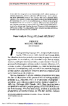

@Article{FoxFriendly95,
author = {John Fox and Michael Friendly},
year = {1995},
title = {Data Analysis using APL2 and APL2STAT},
journal = {Sociological Methods \& Research},
volume = {23},
number = {3},
pages = {282–302},
doi = {10.1177/0049124195023003002},
url = {http://datavis.ca/papers/apl2stat/FoxFriendly-SMR-apl2stat.pdf},
}